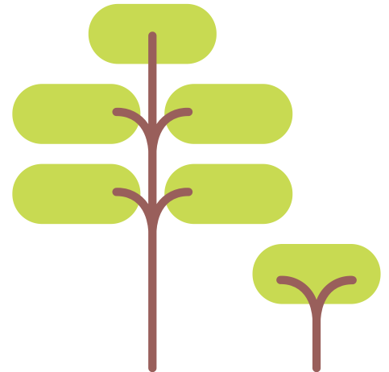

<ion-header translucent>
    <ion-toolbar color="primary">
  
      <ion-title slot="start">Logo</ion-title>
      <ion-title>Menu</ion-title>
  
    </ion-toolbar>
  </ion-header>

<ion-content>

  <ion-grid>
    <ion-row>
      <ion-item class="centerLog">
        <ion-label color="primary" floating>Identifiant</ion-label>
        <ion-input class="inputLog" [(ngModel)]="user_id"></ion-input>
      </ion-item>   
    </ion-row>
    <ion-row>
      <ion-item class="centerLog">
        <ion-label color="primary" floating>Mot de Passe</ion-label>
        <ion-input class="inputLog" [(ngModel)]="user_mdp" type="password"></ion-input>
      </ion-item>
    </ion-row>

    <ion-row>
      <ion-item class="centerLog">
        <ion-button class="btnLog" type="submit" (click)="loginUser()">Connexion</ion-button>
      </ion-item>
      
    </ion-row>
  </ion-grid>


  <ion-item class="footer">
    
    
  </ion-item>
<<<<<<< Updated upstream
  <ion-button (click)="loginUser()">Connexion</ion-button>
=======
  
>>>>>>> Stashed changes

</ion-content>
